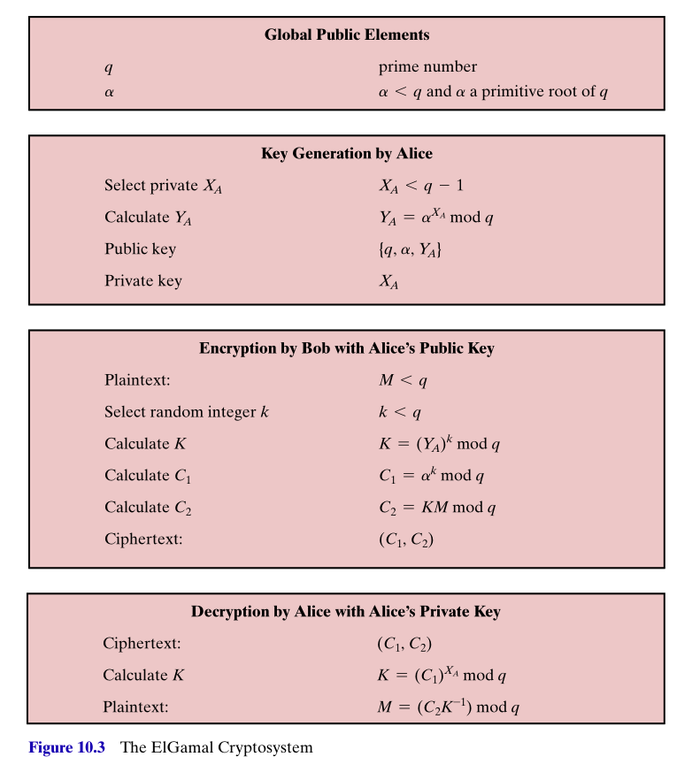

Public Key Cryptography
Killian O’Brien
6G6Z0024 Applied Cryptography 2023/24
Lecture Week 08 – Mon 20 November 2023
Introduction
In this lecture we shall look at
- Diffie-Hellman key exchange
- the ElGamal system
Key Exchange
- In practice, public key cryptography works hand in hand with symmetric encryption, such as AES
- A common approach is for public key encryption to be used to exchange a private key, that is then used to commence communication under symmetric encryption.
DH key exchange
- Diffie-Hellman key exchange (1976) is a method that allows two parties to agree on a shared secret (number) by the exchange unencrypted messages.
- This shared secret can then be used to generate a shared secret key to enable secure, encrypted communication.
- DH key exchange uses a tool from modular arithmetic called discrete logarithms.
Reminder: What are logarithms?
- Exponentials – Given numbers \(a,b\), a number of the form \(c = a^b\), is called an exponential (or power), with base \(a\), and exponent \(b\).
- we usually have \(a>0\)
- for positive integers \(b\), \(a^b\) is given by repeated multiplication, i.e. \[a^b = a \cdot a \cdot \dots \cdot a,\] the product of \(b\) factors of \(a\).
- exponentials with negative exponents are defined using \[a^{-b} = \frac{1}{a^b}\]
- Logarithms – These are the inverses of exponentials.
- So if \(c=a^b\) then
- \(\log_a(c) = b\).
- We say \(b\) is the logarithm, with base \(a\), of \(c\).
- You might see a function \(\log\) mentioned without a base. Its meaning is usually defined from the context/discipline.
- Computer scientists would usually mean \(\log_2\)
- Mathematicians would usually mean \(\log_e\), the natural logarithm
- Engineers might usually mean \(\log{10}\)
What are discrete logarithms?
- Discrete logarithms is the term for logarithms within modular arithmetic.
- Working modulo a prime \(p\), if \(c \equiv a^b \pmod{p}\) then
- \(b\) is the discrete logarithm of \(c\), to the base \(a\), modulo \(p\).
- Stallings introduces the notation \[b = \text{dlog}_{a,p}(c).\]
- Usually the base used is a primitive root modulo \(p\), i.e. a number \(a\) whose powers generall ALL the non-zero elements modulo \(p\), i.e. the residues \[ (a \text{ mod } p),\, (a^2 \text{ mod } p),\, (a^3 \text{ mod } p), \dots , (a^{p-1} \text{ mod } p),\] are all distinct and consist of the integers \[1, 2, \dots, p-1,\] (though not in that order).
- Security arises from the facts that
- computing modular exponentials is fast (using modular reduction, Euler’s theorem and repeated squaring)
- there is no known fast algorithm for computing discrete logarithms. So for suitable large \(p\), it cannot be done in any practical way.
Diffie-Hellman key exchange algorithm – How Alice and Bob can agree on a shared secret
 Alice and Bob agree on a (large) prime \(q\), and a primitive root \(\alpha\), modulo \(q\).
Alice and Bob agree on a (large) prime \(q\), and a primitive root \(\alpha\), modulo \(q\).- Alice and Bob generate their own private keys \(X_A, X_B \lt q\).
- Alice and Bob then calculate their public keys \[Y_A = (\alpha^{X_A} \text{ mod } q ), \quad Y_B = (\alpha^{X_B} \text{ mod } q ).\]
- Alice and Bob exchange their public keys \(Y_A\) and \(Y_B\). Note that the private keys \(X_A\) and \(X_B\) are kept private and not exposed.
- Alice calculates \[K =\left ( (Y_B)^{X_A} \text{ mod } q \right )\] and Bob calculates \[K =\left ( (Y_A)^{X_B} \text{ mod } q \right .)\]
- Note that \[K =\left ( (Y_B)^{X_A} = \left (\alpha^{X_B} \right )^{X_A} = \alpha^{X_B\cdot X_A} = \left (\alpha^{X_A} \right )^{X_B} = (Y_A)^{X_B}\text{ mod } q \right )\]
- Alice and Bob both know the shared secret \(K\). But nobody else does. Even if they’ve eavesdropped on all these setup communications.
ElGamal cryptosystem
-  From 1984, provides an enhancement of DH key exchange that introduces an element of authentication into the exchanges.
- Stallings figure to the right shows what’s required for Bob to send encrypted communication to Alice.
- Alice generates and publishes her public key \((q, \alpha, Y_A = \alpha^{X_A})\) as before, still retaining her private key \(X_A\).
- Bob prepares plaintext message block \(M\) and an element \(k\) that is sued to caluclate a temporary secret key \(K = (Y_A^k \text{ mod } q)\).
- Bob calculates \[C_1 = (\alpha^k \text{ mod } q), \, \, C_2 = (KM \text{ mod } q),\] and sends the pair \((C_1, C_2)\) to Alice.
- Alice can recover the secret key \(K\) by computing \[K = (C_1^{X_A} \text{ mod } q),\] and decrypt the message \(M\) by computing \[M = ( C_2 K^{-1} \text{ mod } q).\]